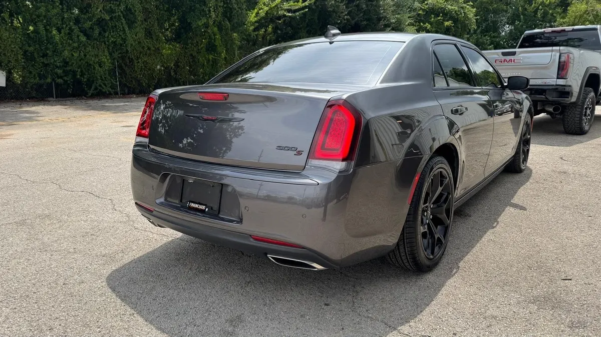

2023 Chrysler 300
Gris • ID CCH-426

1/7Datos generales
| Año | 2023 |
|---|---|
| Marca | Chrysler |
| Modelo | 300 |
| Tipo | Sedán |
| Color | Gris |
| Millas | 60,000 millas |
| Tracción | Por confirmar |
Especificaciones del modelo
| Motor | 3.6L Pentastar V6 (el más común; opciones: 5.7L HEMI V8, 6.4L HEMI V8 en 300C) |
|---|---|
| Potencia | 292 hp (3.6L; 300 en 300S, 363 el 5.7L, 485 el 6.4L del 300C) |
| Torque | 260 lb-pie (3.6L; 264 en 300S, 394 el 5.7L, 475 el 6.4L) |
| Transmisión | Automática 8 velocidades |
| Tracción del modelo | RWD (AWD disponible con V6) |
| Consumo (MPG) | Ciudad: 19 (V6 RWD); 18 (V6 AWD); 16 (5.7L); 15 (300C). Carretera: 30 (V6 RWD); 27 (V6 AWD); 25 (5.7L); 24 (300C) |
| Combustible | Gasolina |
| Remolque máximo | ≈1000 (no es vehículo de remolque; sin homologación oficial) |
| Asientos | 5 |
| Carrocería | Sedán |
Datos típicos de este año y modelo, tomados de fuentes públicas (fabricante, KBB, Edmunds). El motor, la tracción y el equipamiento exactos de esta unidad los confirma el dealer.
Ideal para
Para manejar todos los días en la ciudad.
Año, millas y características salen de los datos del inventario; confirma los datos exactos de esta unidad con el dealer. Esta ficha no muestra precios: el dealer los da por escrito.